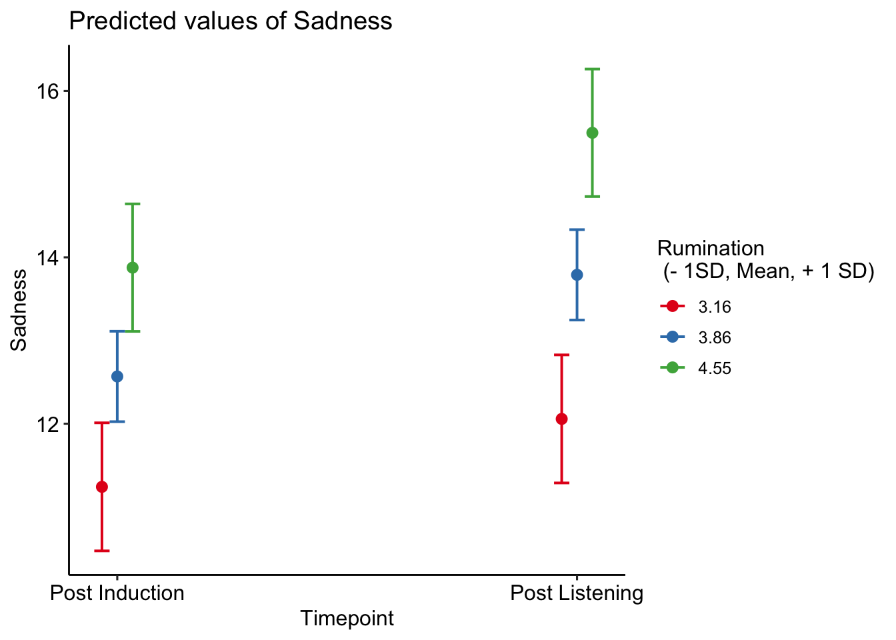

Last updated: 2019-10-02
Checks: 6 1
Knit directory: MusicEmoRegInRumination/
This reproducible R Markdown analysis was created with workflowr (version 1.4.0). The Checks tab describes the reproducibility checks that were applied when the results were created. The Past versions tab lists the development history.
The R Markdown file has unstaged changes. To know which version of the R Markdown file created these results, you’ll want to first commit it to the Git repo. If you’re still working on the analysis, you can ignore this warning. When you’re finished, you can run wflow_publish to commit the R Markdown file and build the HTML.
Great job! The global environment was empty. Objects defined in the global environment can affect the analysis in your R Markdown file in unknown ways. For reproduciblity it’s best to always run the code in an empty environment.
The command set.seed(20190920) was run prior to running the code in the R Markdown file. Setting a seed ensures that any results that rely on randomness, e.g. subsampling or permutations, are reproducible.
Great job! Recording the operating system, R version, and package versions is critical for reproducibility.
Nice! There were no cached chunks for this analysis, so you can be confident that you successfully produced the results during this run.
Great job! Using relative paths to the files within your workflowr project makes it easier to run your code on other machines.
Great! You are using Git for version control. Tracking code development and connecting the code version to the results is critical for reproducibility. The version displayed above was the version of the Git repository at the time these results were generated.
Note that you need to be careful to ensure that all relevant files for the analysis have been committed to Git prior to generating the results (you can use wflow_publish or wflow_git_commit). workflowr only checks the R Markdown file, but you know if there are other scripts or data files that it depends on. Below is the status of the Git repository when the results were generated:
Ignored files:
Ignored: .DS_Store
Ignored: .Rhistory
Ignored: .Rproj.user/
Ignored: analysis/StudyOneModelExplore_cache/
Untracked files:
Untracked: analysis/s2QualitativeCoding.Rmd
Unstaged changes:
Modified: analysis/StudyOneConfirm.Rmd
Modified: analysis/StudyOneMusicExplore.Rmd
Modified: analysis/StudyTwoExplore.Rmd
Modified: data/s2MechCoding.csv
Note that any generated files, e.g. HTML, png, CSS, etc., are not included in this status report because it is ok for generated content to have uncommitted changes.
These are the previous versions of the R Markdown and HTML files. If you’ve configured a remote Git repository (see ?wflow_git_remote), click on the hyperlinks in the table below to view them.
| File | Version | Author | Date | Message |
|---|---|---|---|---|
| Rmd | 68d41a4 | Joel Larwood | 2019-10-02 | change study structure, hide code |
| html | 68d41a4 | Joel Larwood | 2019-10-02 | change study structure, hide code |
| Rmd | 9b1db26 | Joel Larwood | 2019-09-25 | wrongs links for study one fixed |
| html | 9b1db26 | Joel Larwood | 2019-09-25 | wrongs links for study one fixed |
| html | 1eec503 | Joel Larwood | 2019-09-25 | Build site. |
| html | d153258 | Joel Larwood | 2019-09-25 | Build site. |
| html | 2e25e9c | Joel Larwood | 2019-09-25 | Build site. |
| Rmd | dedd590 | Joel Larwood | 2019-09-25 | Publish to study 2 explore |
| Rmd | cd4829d | Joel Larwood | 2019-09-23 | build control model |
| html | cd4829d | Joel Larwood | 2019-09-23 | build control model |
library(tidyverse)
library(sjlabelled)
s1raw <- read_csv("data/s1.csv")
names(s1raw)
s1 <- s1raw %>%
mutate(rrq_6 = 6 - rrq_6,
rrq_9 = 6 - rrq_9,
rrq_10 = 6 - rrq_10,
musebaq = rowSums(dplyr::select(., musebaq_1:musebaq_9)),
Baseline = rowSums(dplyr::select(., deq_1_1:deq_1_4)),
PostInduction = rowSums(dplyr::select(., deq_2_1: deq_2_4)),
PostListening = rowSums(dplyr::select(., deq_3_1: deq_3_4)),
dif = PostListening - PostInduction
)
s1 <- s1 %>%
mutate(rumination = rowMeans(dplyr::select(., rrq_1:rrq_12)), na.rm = FALSE)
s1 %>%
dplyr::select(Baseline,
PostInduction,
PostListening,
rumination,
musebaq,
hours.listen,
reg.use_1,
age) %>%
psych::describe()
write_csv(s1, "data/s1Processed.csv")
# s1 %>% var_labels(mecscale_1 = "brainstem",
# mecscale_2 = "Entrainment",
# mecscale_3 = "Memory",
# mecscale_4 = "Conditioning",
# mecscale_5 = "Imagery",
# mecscale_6 = "Contagion",
# mecscale_7 = "Expectancy",
# mecscale_8 = "Appraisal",
# reg.use_1 = "Regulatory Use Probability")The alpha for the DEQ - Sadness at Baseline was 0.8471773
The alpha for the DEQ DEQ - Sadness at Post Induction was 0.8601513
The alpha for the DEQ _ Sadness at post Listening was 0.8638161
The alpha for rumination scores was 0.9083123
The alpha for the cognitive and emotion regulation scale of the MUSEBAQ was 0.9077473
s1Manipulation <- t.test(s1$PostInduction, s1$Baseline, paired = TRUE)
apa::t_apa(s1Manipulation)
apa::t_apa(s1Manipulation, format = "rmarkdown")
mean(s1$Baseline)
sd(s1$Baseline)
mean(s1$PostInduction)
sd(s1$PostInduction)The manipulation/induction of sadness was succesful t(381) = 14.01, p < .001, d = 0.72, with scores rising from baseline (M = 9.5104712, SD = 5.0606448) to Post induction (M = 12.5602094, SD = 5.5999895)
A significant interaction was found.
library(sjlabelled)
s1long <- s1 %>%
gather(key = Timepoint,
value = Sadness,
factor_key = TRUE,
PostInduction, PostListening)
write_csv(s1long, "data/s1long.csv")
library(lmerTest)
library(sjPlot)
s1glmm <- lmerTest::lmer(Sadness~1 + Timepoint + rumination + Timepoint*rumination + (1 |id), data = s1long)
tab_model(s1glmm)| Sadness | |||
|---|---|---|---|
| Predictors | Estimates | CI | p |
| (Intercept) | 5.25 | 2.19 – 8.31 | 0.001 |
| Post Listening | -1.01 | -3.13 – 1.11 | 0.350 |
| rumination | 1.90 | 1.12 – 2.68 | <0.001 |
| TimepointPostListening:rumination | 0.58 | 0.04 – 1.12 | 0.037 |
| Random Effects | |||
| σ2 | 7.02 | ||
| τ00 id | 22.27 | ||
| ICC | 0.76 | ||
| N id | 381 | ||
| Observations | 762 | ||
| Marginal R2 / Conditional R2 | 0.085 / 0.781 | ||
This interaction showed a larger increase in sadness for people higher in rumination
library(sjPlot)
sjPlot::plot_model(s1glmm,
type = "int",
mdrt.values = "meansd",
ci.level = NULL,
legend.title = "Rumination\n (- 1SD, Mean, + 1 SD)",
show.values = TRUE,
show.p = TRUE,
order.terms = c(1,2,3)
) +
ggplot2::theme(title = element_blank())+
ggpubr::theme_pubr(legend = "right")
| Version | Author | Date |
|---|---|---|
| 68d41a4 | Joel Larwood | 2019-10-02 |
The simple effects showed that sadness increased for all levels of rumunation
minusrum <- mean(s1$rumination, na.rm = TRUE)-sd(s1$rumination, na.rm = TRUE)
plusrum <- mean(s1$rumination, na.rm = TRUE)+sd(s1$rumination, na.rm = TRUE)
meanrum <- mean(s1$rumination, na.rm = TRUE)
s1SimpleList <- list(rumination = c(minusrum, plusrum, meanrum), Timepoint = c("PostInduction", "PostListening"))
s1SimpleSlopes <- emmeans::emmeans(s1glmm, ~rumination*Timepoint, at = s1SimpleList)
emmeans::contrast(s1SimpleSlopes, "pairwise", by = "rumination")rumination = 3.16:
contrast estimate SE df t.ratio p.value
PostInduction - PostListening -0.817 0.272 379 -3.009 0.0028
rumination = 4.55:
contrast estimate SE df t.ratio p.value
PostInduction - PostListening -1.624 0.272 379 -5.976 <.0001
rumination = 3.86:
contrast estimate SE df t.ratio p.value
PostInduction - PostListening -1.220 0.192 379 -6.357 <.0001
sessionInfo()R version 3.6.1 (2019-07-05)
Platform: x86_64-apple-darwin15.6.0 (64-bit)
Running under: macOS Mojave 10.14.6
Matrix products: default
BLAS: /Library/Frameworks/R.framework/Versions/3.6/Resources/lib/libRblas.0.dylib
LAPACK: /Library/Frameworks/R.framework/Versions/3.6/Resources/lib/libRlapack.dylib
locale:
[1] en_AU.UTF-8/en_AU.UTF-8/en_AU.UTF-8/C/en_AU.UTF-8/en_AU.UTF-8
attached base packages:
[1] stats graphics grDevices utils datasets methods base
other attached packages:
[1] sjPlot_2.7.0 lmerTest_3.1-0 lme4_1.1-21 Matrix_1.2-17
[5] sjlabelled_1.1.0 forcats_0.4.0 stringr_1.4.0 dplyr_0.8.3
[9] purrr_0.3.2 readr_1.3.1 tidyr_0.8.3 tibble_2.1.3
[13] ggplot2_3.2.0 tidyverse_1.2.1
loaded via a namespace (and not attached):
[1] nlme_3.1-140 pbkrtest_0.4-7 fs_1.3.1
[4] lubridate_1.7.4 RColorBrewer_1.1-2 insight_0.4.1
[7] httr_1.4.1 rprojroot_1.3-2 numDeriv_2016.8-1.1
[10] tools_3.6.1 TMB_1.7.15 backports_1.1.4
[13] R6_2.4.0 lazyeval_0.2.2 colorspace_1.4-1
[16] withr_2.1.2 tidyselect_0.2.5 mnormt_1.5-5
[19] emmeans_1.4 compiler_3.6.1 git2r_0.26.1
[22] performance_0.3.0 cli_1.1.0 rvest_0.3.4
[25] xml2_1.2.1 sandwich_2.5-1 labeling_0.3
[28] bayestestR_0.2.2 scales_1.0.0 mvtnorm_1.0-11
[31] psych_1.8.12 digest_0.6.20 foreign_0.8-71
[34] minqa_1.2.4 rmarkdown_1.14 pkgconfig_2.0.2
[37] htmltools_0.3.6 rlang_0.4.0 readxl_1.3.1
[40] rstudioapi_0.10 generics_0.0.2 zoo_1.8-6
[43] jsonlite_1.6 magrittr_1.5 apa_0.3.2
[46] Rcpp_1.0.2 munsell_0.5.0 stringi_1.4.3
[49] multcomp_1.4-10 whisker_0.3-2 yaml_2.2.0
[52] snakecase_0.11.0 MASS_7.3-51.4 plyr_1.8.4
[55] grid_3.6.1 parallel_3.6.1 ggrepel_0.8.1
[58] sjmisc_2.8.1 crayon_1.3.4 lattice_0.20-38
[61] ggeffects_0.11.0 haven_2.1.1 splines_3.6.1
[64] sjstats_0.17.5 hms_0.5.0 zeallot_0.1.0
[67] knitr_1.24 pillar_1.4.2 ggpubr_0.2.3
[70] boot_1.3-22 ggsignif_0.6.0 estimability_1.3
[73] codetools_0.2-16 glue_1.3.1 evaluate_0.14
[76] modelr_0.1.4 vctrs_0.2.0 nloptr_1.2.1
[79] cellranger_1.1.0 gtable_0.3.0 assertthat_0.2.1
[82] xfun_0.9 xtable_1.8-4 broom_0.5.2
[85] coda_0.19-3 survival_2.44-1.1 glmmTMB_0.2.3
[88] workflowr_1.4.0 TH.data_1.0-10